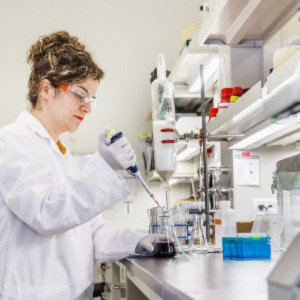
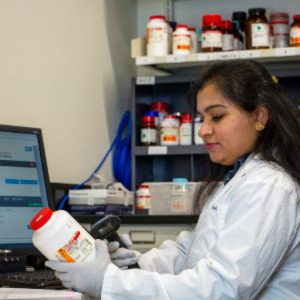

Services
Lab Quality GAP Analysis
Our team will work with you to understand your current workflow and evaluate it against a suitable model, standard, or high-level quality deliverables. This analysis identifies the area of weakness and uncovers the difference between perception vs reality. We will, identify the Gap and suggest a necessary action list to close the GAP

Quality Process Mapping
A well-mapped process is a road map for managing and controlling quality processes based on facts, experience, and real-time data. Our team will work on the input and workflow to achieve the desired output.

Audit and Corrective Action Plan
We conduct internal audits to ISO 17025 and 15189 standards. Any weakness in your management system will be reported in the non-conformance report. To understand the report and work on the non-conformances Q Boost offers online training and consultation service

QR Coded Chemical Inventory
QR coded inventory management system is developed for easy and efficient tracking of lab chemicals and supplies. It not only reduces the struggle of researchers looking around for chemicals in labs but also help in planning experiments. This digital technology can track the chemical from delivery to disposal.
Consultative Support
Managing the quality certification is as difficult as obtaining it. Frequent evaluation of your quality system is required to address deviation, implement corrective actions, and maintain the integrity of your quality system. Our consultative support program offers quality evaluation prior to your annual quality audit, which will help your organization to identify non-conformances and implement corrective actions.
Lab Investigation and Management System-Quality Management System (LIMS-QMS)
Our creative software team has designed user-friendly quality software that can be custom-tailored to user demands. Q Boost LIMS offers a set of comprehensive features which includes workflow management, the scope of work, sample receiving and tracking, document and record management, client tracker, feedback management and CAPA.
Schedule Free Consultation